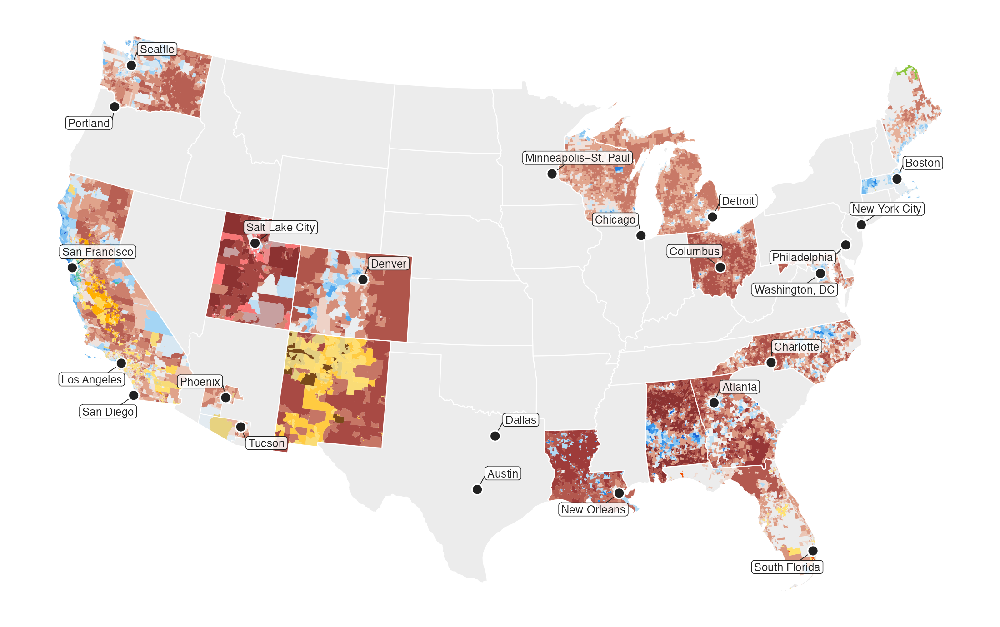
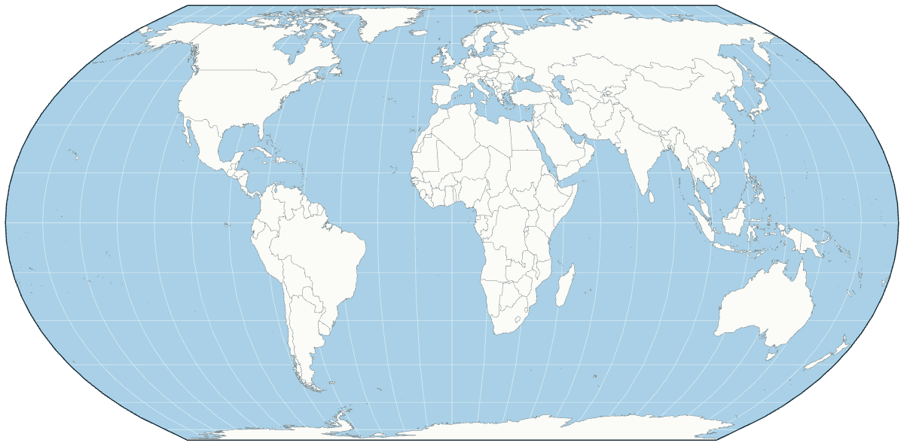

The Atlas of Voting Blocs
Check out the Githubs for code, datasets, and examples: cascobayesian/atlas.
The beta-binomial mixture model code, Elections.BBMM; and the data and analyses behind the atlas, Local.Politics (GitHub).

United States
Thirty-eight states, cities and counties on one national color scale, covering 54% of Americans.
Explore the map →


Cities
Voting blocs from within cities across the world.
Browse the cities →
World
Country results.
See the world map →The method itself: John D. O’Brien (2026), “A Bayesian mixture model captures temporal and spatial structure of voting blocs within longitudinal referendum data,” Political Science Research and Methods, 1–22.
The analysis of local politics: Aaron Kaufman and John D. O’Brien. “The Structure of Local Politics.” Available on request.